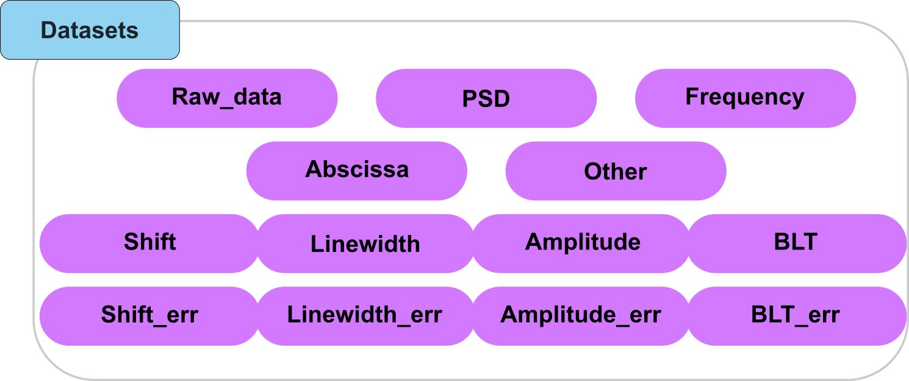

The HDF5_BLS package
Installation and presentation
Installation
To install the package, you can either: * Download the source code from the GitHub repository (the hard way) * Use pip to install the package (easy way)
With pip
To install the HDF5_BLS library to use in Python scripts or Jupyter notebooks, you can use pip:
pip install HDF5_BLS
This will install the latest version of the package from the Python Package Index (PyPI).
Attention
This allows you to install the HDF5_BLS library but not the HDF5_BLS_analyse (see Installation) and HDF5_BLS_treat libraries that have to be installed separately. This installation also does not allow you to run the GUI. To use the GUI, please download the entire GitHub repository and run the GUI from source.
From source
The source code can be downloaded from the GitHub repository. To download the source code, click on the green button “Code” and then click on the “Download ZIP” button. Once the download is complete, unzip the file and open a terminal in the unzipepd file. To install the package, run the following command:
pip install packages/HDF5_BLS
This will install the package and all its dependencies. To check if the package was installed correctly, run the following command:
python -c "import HDF5_BLS"
If the package was installed correctly, the command will not return any error.
If you want to contribute to the development of the project, we recommend you to check the Setting up the development environment on Visual Studio Code section of the documentation where we explain how to set up your development environment on Visual Studio Code and install the package in editable mode.
Presentation
The HDF5_BLS library is a Python package meant to interface Python code with a HDF5 file. The development of this solution was based on three main goals: 1. Simplicity: Make it easy to store and retrieve data from a single file. 2. Universality: Allow all modalities to be stored in a single file, while unifying the metadata associated to the data. 3. Expandability: Allow the format to grow with the needs of the community.
Practically, this means using this solution should be easy, intuitive and allow a seamless integration of the proposed standard to your existing code. Here is a quick code example to show the integration of the package in a simple case (you want to store a signal out of a spectrometer, its corresponding power spectral density, its frequency axis and its shift and linewidth arrays):
###############################################################################
# Existing imports
###############################################################################
from HDF5_BLS import wrapper
# Create a new file
wrp = wrapper.Wrapper(filepath = "path/to/the/file.h5")
###############################################################################
# Existing code extracting data from a file
###############################################################################
# Store the data in the file
wrp.add_raw_data(data = data, parent_group = "Brillouin/path/in/the/file", name = "Name of the dataset")
###############################################################################
# Existing code extracting a PSD and a frequency vector from the data
###############################################################################
# Store the frequency vector together with the raw data
wrp.add_frequency(data = frequnecy, parent_group = "Brillouin/path/in/the/file", name = "Frequency vector")
# Store the PSD dataset together with the raw data
wrp.add_PSD(data = PSD, parent_group = "Brillouin/path/in/the/file", name = "PSD")
###############################################################################
# Existing code extracting the shift and linewidth of the data
###############################################################################
# Store the PSD dataset together with the raw data
wrp.add_treated_data(shift = shift, linewidth = linewidth, parent_group = "Brillouin/path/in/the/file", name = "PSD")
Unification
This package also aims at unifying all the processing steps to extract PSD from raw data and extract Brillouin shift and linewidth from the PSD. These unifying steps are however not necessary to store your data in an HDF5 file. We will describe later the solution we propose to do this.
The Wrapper object
The “wrapper” module has one main object: Wrapper. This object is used to interact with the HDF5 file. It is used to read the data, to write the data and to modify any aspect of the HDF5 file (dataset, groups or attributes). The module also provides different error objects used to recognize errors when using the Wrapper object and raise exceptions.
The Wrapper object is initialized by running the following command:
wrp = Wrapper()
This line creates a new Wrapper object with no attributes or data. It also creates a temporary H5 file stored in the temporary directory of the OS, with the following structure:
file.h5
└── Brillouin (group)
By default, the attributes of the “Brillouin” group are the following:
file.h5
└── Brillouin (group)
├── Brillouin_type -> "Root"
└── HDF5_BLS_version -> "0.1" # The current of the HDF5_BLS package (might be updated in the future)
Important
As long as no filepaths are given to the Wrapper object, the file is stored in a temporary folder (the temporary folder of the operating system). Note that this temporary file is deleted either when the Wrapper object is destroyed or when the file is stored elsewhere. It is therefore good practice to specify a non-temporary filepath to the file when creating a new Wrapper object, with the “filepath” parameter:
wrp = Wrapper(filepath = "path/to/file.h5")
Alternatively, you can save the file with the “save_as_hdf5” method of the Wrapper object. This method copies the current file to the given filepath and deletes the H5 file if it was temporary:
wrp = Wrapper()
wrp.save_as_hdf5(filepath = "path/to/file.h5")
To open an existing H5 file, you can directly give the path to the file to the Wrapper object:
wrp = Wrapper(filepath = "path/to/file.h5")
Adding data to the HDF5 file (from script)
The addition of any type of data or attribute to the HDF5 file has been centralized in the Wrapper.add_ dictionary method. This method is safe but complex and not user-friendly. Methods derived from this method are meant to simplify the process of adding data to the HDF5 file, specific to each type of data.
To add a single dataset to a group, we first need to specify the type of dataset we want to add, which are the following:
{kind=link}

Fig. 8 A visual representation of the types of datasets that can be added to the HDF5 file.
“Abscissa_…”: An abscissa array for the measures where the dimensions on which the dataset applies are given after the underscore.
“Amplitude”: The dataset contains the values of the fitted amplitudes.
“Amplitude_err”: The dataset contains the error of the fitted amplitudes.
“BLT”: The dataset contains the values of the fitted amplitudes.
“BLT_err”: The dataset contains the error of the fitted amplitudes.
“Frequency”: A frequency array associated to the power spectral density
“Linewidth”: The dataset contains the values of the fitted linewidths.
“Linewidth_err”: The dataset contains the error of the fitted linewidths.
“PSD”: A power spectral density array
“Raw_data”: The dataset containing the raw data obtained after a BLS experiment.
“Shift”: The dataset contains the values of the fitted frequency shifts.
“Shift_err”: The dataset contains the error of the fitted frequency shifts.
“Other”: The dataset contains other data that will not be used by the library.
From there, the following functions are available to add the dataset to the HDF5 file:
add_raw_data: To add raw data to a group
add_PSD: To add a PSD to a group
add_frequency: To add a frequency axis to a group
add_abscissa: To add an abscissa to a group
add_treated_data: To add a shift, linewidth and their respective errors to a dedicated “Treatment” group
add_other: To add a shift, linewidth and their respective errors to a dedicated “Treatment” group
General approach to adding data to the HDF5 file
Adding a dataset to the file always come with three other pieces of information:
Where to add the dataset in the file
What to call the added dataset
What is the type of the dataset we want to add
To add a dataset to the file, we’ll therefore call type-specific functions with the data to add, the place where to add it and the name to give the dataset as arguments, following a code of line resembling:
wrp.add_raw_data(data = data,
parent_group = "Brillouin/Water spectrum",
name = "Measure of the year")
This approach is the one used for * add_raw_data * add_PSD * add_frequency * add_other
Example Let’s consider the following example: we have just initialized a wrapper object and want to add a spectrum obtained from our spectrometer. We have already converted this spectrum to a numpy array, and named it data. Now we want to add this data in a group called “Water spectrum” in the root group of the HDF5 file and call this raw data “Measure of the year”. Then we will write:
wrp.add_raw_data(data = data,
parent_group = "Brillouin/Water spectrum",
name = "Measure of the year")
Now let’s say that we have analyzed this spectrum and obtained a PSD (stored in the variable “psd”) and frequency array (stored in the variable “freq”). We want to add these two arrays in the same group, and call them “PSD” and “Frequency” respectively. We will write:
wrp.add_PSD(data = psd,
parent_group = "Brillouin/Water spectrum",
name = "PSD")
wrp.add_frequency(freq,
parent_group = "Brillouin/Water spectrum",
name = "Frequency")
Exception 1: Adding treated data
Adding treated data differs slightly from adding individual datasets as we’ll usually collect a number of different results to store. Therefore, instead of using different functions to store a shift or linewidth array, we have chosen to use a single function to add all the results of treatment, and create the group dedicated to storing the treatment results. As such, the function will have the following attributes:
parent_group: The parent group where to store the data in the HDF5 file
name_group: The name of the group that will contain the treatment results
amplitude (optional): The amplitude array to add
amplitude_err (optional): The error of the amplitude array
blt (optional): The Loss Tangent array to add
blt_err (optional): The error of the Loss Tangent array
linewidth (optional): The linewidth array to add
linewidth_err (optional): The error of the linewidth array
shift(optional): The shift array to add
shift_err (optional): The error of the shift array
treat (optional): An HDF5_BLS_Treat.Treat object to add. This object stores all teh optional parameters above. It also stores the process as a JSON file that is stored as an attribute of the group.
Example
Let’s consider the following example: we have treated our data and have obtained a shift array (shift), a linewidth array (linewidth) and their errors (shift_err and linewidth_err). We want to add these arrays in the same group as the PSD, that is the group “Test”. The treated data are stored in a separate group nested in the “Test” group by the choices made while building the structure of the file. This is so the name of the treatment group can be chosen freely. Let’s say that in this case, we have performed a non-negative matrix factorization (NnMF) on the data, and extracted the shift values closest to 5GHz. We will therefore call this treatment “NnMF - 5GHz”. We will write:
wrp.add_treated_data(shift = shift,
linewidth = linewidth,
shift_err = shift_err,
linewidth_err = linewidth_err,
parent_group = "Brillouin/Test",
name_group = "NnMF - 5GHz")
Exception 2: Adding an abscissa
Adding abscissa also differs from the general case as we might want to add an abscissa array that is multi-dimensional and be able to know which dimensions of the PSD the abscissa correspomnds to. The add_abscissa method therefore has the following attributes:
parent_group: The parent group where to store the data in the HDF5 file
name: The name of the abscissa to add
unit: The unit of the axis
dim_start: The first dimension of the abscissa array, by default 0
dim_end: The last dimension of the abscissa array, by default the last number of dimension of the array
Example Let’s consider the following example: we have just initialized a wrapper object and want to add an abscissa axis corresponding to our measures that have been stored in the group “Brillouin/Temp”. Say that this abscissa axis corresponds to temperature values, from 35 to 40 degrees and that there are 10 points in the axis. We will therefore call this abscissa axis “Temperature”. We will write:
wrp.add_abscissa(data = np.linspace(35, 40, 10),
parent_group = "Brillouin/Temp",
name = "Temperature",
unit = "C",
dim_start = 0,
dim_end = 1)
If you now want to use custom values for this axis, you can also specify them directly in the function call:
wrp.add_abscissa(data = data,
parent_group = "Brillouin/Temp",
name = "Temperature",
unit = "C",
dim_start = 0,
dim_end = 1)
Importing data from external files
Importing datasets to the HDF5 file from independent data files, through the HDF5_BLS package, is always done following to successive steps:
Extracting the data and the metadata that can be extracted from the data files. This can be done using the load_data module.
Adding the data and metadata to the HDF5 file. This is done using the Wrapper.add_dictionary method.
To make the process more user friendly, we have developed a set of derived methods that are specific to each type of data that is to be added (Raw data, PSD, Frequency, Abscissa or treated data).
In this section, we will present these methods. We encourage interested readers to refer to the chapter dedicated to the load_data module for more information on the extraction of the data and the metadata.
General approach for importing data
Much like adding data from a script, we can import data from external files by using type-specific functions. These functions are:
Wrapper.import_abscissa: To import an abscissa array.
Wrapper.import_frequency: To import a frequency array.
Wrapper.import_PSD: To import a PSD array.
Wrapper.import_raw_data: To import raw data.
Wrapper.import_treated_data: To import the data arrays resulting from a treatment.
These function work a bit differently from the ones used to add data, as we might need parameters to extract the data from the file. Therefore, these functions have the following attributes:
filepath: The filepath to the file to import the data from.
parent_group: The parent group where to store the data in the HDF5 file.
name: The name of the dataset to add.
creator: An identifier of the creator of the file. This is used to differentiate different structures of files using the same format (for example .dat files).
parameters: A dictionary containing the parameters that are needed to extract the data from the file. This is used to either access the data if it is somehow encoded or to interpret the data if a routine pipeline is used to obtain for example a PSD from a time-domain dataset
reshape: The new shape of the array, by default None means that the shape is not changed
overwrite: A parameter to indicate whether the dataset should be overwritten if it already exists, by default False - attributes are not overwritten.
all the attributes corresponding to the type of data (abscissa, frequency, PSD, raw data, treated data)
Example Let’s consider the following example: we have just initialized a wrapper object and want to import an abscissa axis corresponding to our measures that have been stored in a .npy file (for example if a Python routine has been used to impose conditions for the measure). In that case, the array can be interpreted without any parameters nor specification.
wrp.import_abscissa(filepath = "path/to/file.npy", parent_group = "Brillouin/Measure", creator = None, parameters = None, name = "Time", unit = "s", dim_start = 0, dim_end = 1, reshape = None, overwrite = False)
Adding and merging HDF5 files
Creating a new HDF5 file based on two existing ones can be done one of two ways depending on the desired end result.
The __add__ dunder metthod. If we want to combine two HDF5 files into a single one “plainly”, for example if we are generating a new HDF5 after each measure, with this structure:
20250214_HVEC_03.h5 └──Brillouin (group) └── 20250214_HVEC_02 └── Measure (dataset)
and we already have a HDF5 file containing the data of the previous experiment:
20250214_HVEC.h5 └── Brillouin (group) ├── 20250214_HVEC_01 │ └── Measure (dataset) └── 20250214_HVEC_02 └── Measure (dataset)
We can simply add the first HDF5 file to the second one with:
wrp1 = Wrapper(filepath = ".../20250214_HVEC.h5") wrp2 = Wrapper(filepath = ".../20250214_HVEC_02.h5") wrp = wrp1 + wrp2
This will create a new HDF5 file with the following structure:
20250214_HVEC.h5 └── Brillouin (group) ├── 20250214_HVEC_01 │ └── Measure (dataset) ├── 20250214_HVEC_02 │ └── Measure (dataset) └── 20250214_HVEC_03 └── Measure (dataset)
WARNING: The new file is a temporary file, it is therefore important to save it after the addition of the two files with:
wrp.save_as_hdf5(filepath = wrp.filepath)
Note that from there, wrp1 and wrp will be the same as the wrapper does not store any data in memory but just acts as an access facilitator to the file.
The add_hdf5 method. If we want to import the HDF5 as a new group, for example if we have this HDF5 file containing the data of a cell study:
Neuronal_cell_study.h5 └── Brillouin (group) ├── Neuronal (group) │ ├── GT 1-7 (group) │ │ └── ... │ ├── L-fibroblast (group) │ │ └── ... └── Skeletal (group) └── ...
And we want to import data done on another neuronal cell line, say “MOV”, that have been stored in the following HDF5 file:
MOV.h5 └── Brillouin (group) └── MOV (group) └── ...
We can simply add the second HDF5 file to the first one by specifying the path to the second file in the Wrapper.add_hdf5 method:
wrp1 = Wrapper(filepath = ".../Neuronal_cell_study.h5") wrp1.add_hdf5(filepath = ".../MOV.h5", parent_group = "Brillouin/Neuronal")
This will create a new HDF5 file with the following structure:
Neuronal_cell_study.h5 └── Brillouin (group) ├── Neuronal (group) │ ├── GT 1-7 (group) │ │ └── ... │ ├── L-fibroblast (group) │ │ └── ... │ ├── MOV (group) │ │ └── ... └── Skeletal (group) └── ...